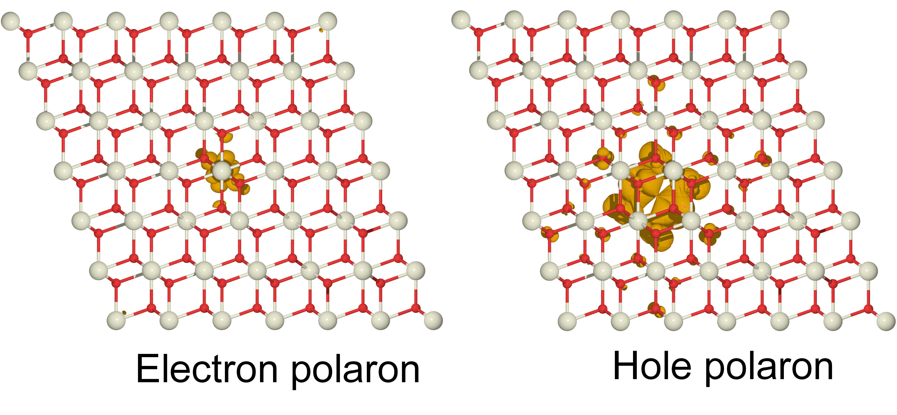
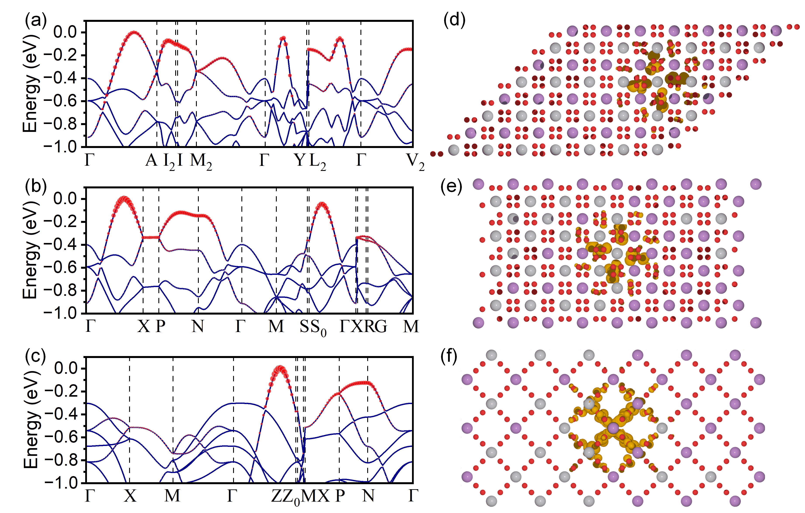
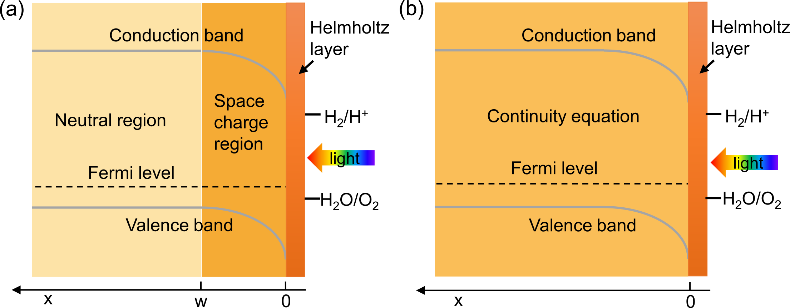

Unveiling Asymmetric Polaron Formation in CeO₂

This research delved into the fundamental physics of polarons. By studying weakly-localized CeO₂, I uncovered the unique coexistence of two different polaron types in the same material: electrons form localized Holstein polarons, while holes form delocalized Fröhlich polarons. This work clarified the microscopic carrier transport mechanisms and the specific roles of different phonon modes in limiting carrier mobility.
View Related Publication
Crystal Symmetry's Role in Polaron Transport

This project established a universal framework for how crystal structure governs polaron behavior. By comparing three phases of BiVO₄ and resolving the polaron controversy in TiO₂, I revealed that crystal symmetry dictates polaron type and transport anisotropy. A key finding was the "crossover" behavior in TiO₂, where anatase and rutile exhibit completely opposite electron and hole polaron types.
View Related Publication
Macro-Meso Modeling for Photoelectrode Design

This project established a predictive model to guide photoelectrode design, bridging quantum mechanical calculations with device-level performance. By developing a continuity equation model fed by first-principles parameters, I successfully predicted the optimal film thickness for p-type CuFeO₂ and guided the structural optimization of n-type Fe₂O₃ from thin films to more efficient nanowire arrays.
View Related Publication